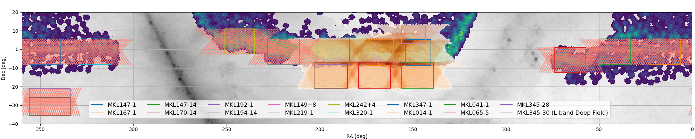

MeerKLASS Glossary

Fig 1. MeerKLASS survey map. Coloured rectangles outline the BOXES/PATCHES. orange/yellow lines show
the SCAN data.
SCANNING STRATEGY - In MeerKLASS, we operate the dish array in back-and-forth SCANs at constant
elevation, for a
total of around 90 to 100 minutes. Within each scan, we perform approximately 38 swings (about 2.5 min
each). We
perform the constant elevation scans during rising and setting sky. As the sky rotates this creates a
raster-like
scanning pattern in RA and DEC - see orange/red shaded areas in Fig. 1. We repeat scans multiple times
(up to 26)
over one survey area (BOX/PATCH). The survey speed is 5/7 arcmin / second (L/UHF band). We integrate
data every 2
seconds. Each scan covers approximately 300 square degrees. Data is only taken 30 minutes after sunset /
before
sunrise, to minimise atmospheric and ionospheric disturbance.
SINGLE DISH DATA - auto-correlation data from each of the dish elements of the array, i.e. the
diagonal
elements of the
interferometric visibilities.
CALIBRATOR SCAN - We perform a calibrator scan before and after each constant elevation scan to a
bright
calibrator and
observe calibrator and 4 points around this for absolute, bandpass calibration and beam calibration.
NOISE DIODE - We fire the noise diode every 20 seconds for a duration of about 0.6 seconds. Data
which
includes the
noise diode has the label ‘ON’. We only use data without noise diode, i.e. with the label ‘OFF’ in our
scientific
analysis.
TIMESTAMPS - We take data every 2 seconds which we also refer to as timestamps.
BLOCK - One observation is referred to as a data block. This is about 2 - 2.5 hours and includes
calibrators. Each block
has a unique MeerKAT numerical reference. These are the individual files available to download from the
SARAO archive.
Sky PATCH - The scan area covered by one observation block. It is about 300 deg2 of sky area and
approximately
rectangular. We cover each sky patch by about 26 blocks, half (about 13) when the patch is rising and
half when it is
setting. When setting up observations, each patch is defined with a rectangular shape in ra, dec
coordinates. Due to the
shape of the scans, the area actually covered will always be larger than the target rectangle. Sky
patches overlap, so
the total sky area covered is less than the sum of each patch. When analysing an individual patch, we
trim the edges
because of homogeneous coverage. So the sky area used for cosmology from an individual patch is less
than the total sky
covered by such patch.
BOX - (interchangeably used as PATCH). This was the internal name given to each sky patch
starting from
2024
observations: BOX1, BOX2, etc. There are a few sky patches that used a different naming (e.g. DESI1,
DESI2, WiggleZ).
The sky location of our MeerKLASS BOXes are marked with coloured rectangles in Fig. 1.
SCAN - A scan refers to the constant elevation data taken during one observational block. Often
BLOCK
and SCAN are used
interchangeably, though SCAN technically refers to the science data without the calibration data.
MAP - Once calibrated, data is projected into sky coordinates (RA/DEC). Data from one frequency
channel
is referred to
as a map.
CUBE - Once calibrated, data is projected into sky coordinates (RA/DEC). Data from all frequency
channels is referred to
as a cube.
OTF - On the Fly Mapping - This refers to the processing pipeline which uses the full visibility
measurement set from
the constant elevation scans to process the interferometric data into images. The images have high
angular resolution
(~15 arcsec).
EPOCH - this term is used by the OTF team interchangeably with BLOCK/SCAN.
TILE - in the OTF imaging pipeline, the sky area is divided into smaller tiles which are
processed
individually into
images before combining into a large image. Typically, one tile covers an sky area of order of 10 square
degrees.

 MeerKAT Large Area Synoptic Survey
MeerKAT Large Area Synoptic Survey